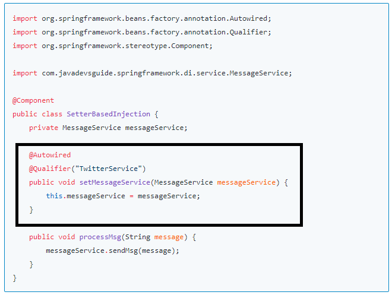

In this article, we will learn how to use setter-based dependency injection in Spring applications.
In setter dependency injection, the Spring IOC container injects a component’s dependencies via JavaBean-style setter methods. A component’s setters expose the dependencies the IoC container can manage.
In the below diagram, the highlighted part of the code shows a setter-based dependency injection example.
Let's see the complete example to demonstrate the Setter-based dependency injection. In this example, we have used spring Java-based container configuration.
You can download the source code of this article from my GitHub repository (link given at end of this article).Let's add a spring-context dependency to maven project like:
<project
xmlns="http://maven.apache.org/POM/4.0.0"
xmlns:xsi="http://www.w3.org/2001/XMLSchema-instance"
xsi:schemaLocation="http://maven.apache.org/POM/4.0.0 http://maven.apache.org/xsd/maven-4.0.0.xsd">
<modelVersion>4.0.0
<groupId>com.javadevsguide.springframework
<artifactId>spring-dependency-injection
<version>0.0.1-SNAPSHOT
<dependencies>
<dependency>
<groupId>org.springframework
<artifactId>spring-context
<version>5.0.0.RELEASE
</dependency>
<dependency>
<groupId>junit
<artifactId>junit
<version>4.8.1
<scope>test
</dependency>
</dependencies>
</project>
Let's create a few Spring beans or components as follows.
Let's create the MessageService interface and provide more than two
implementations for it:
public interface MessageService {
public void sendMsg(String message);
}
Let's implement the MessageService interface. There are many ways to send a
message like email, SMS, Twitter, etc.
@Service("EmailService")
public class EmailService implements MessageService{
public void sendMsg(String message) {
System.out.println(message);
}
}
@Service("SMSService")
public class SMSService implements MessageService{
public void sendMsg(String message) {
System.out.println(message);
}
}
@Service("TwitterService")
public class TwitterService implements MessageService{
public void sendMsg(String message) {
System.out.println(message);
}
}
Note that there are multiple implementations for the MessageService
interface so to avoid ambiguity, let's
use @Qualifier
annotation.
It's time to demonstrate the usage of Setter-based dependency injection. To avoid decoupling always use interfaces or abstract base classes as an instance variable and setter method arguments.
In this example, we have used the MessageService interface.
import org.springframework.beans.factory.annotation.Autowired;
import org.springframework.beans.factory.annotation.Qualifier;
import org.springframework.stereotype.Component;
import com.javadevsguide.springframework.di.service.MessageService;
@Component
public class SetterBasedInjection {
private MessageService messageService;
@Autowired
@Qualifier("TwitterService")
public void setMessageService(MessageService messageService) {
this.messageService = messageService;
}
public void processMsg(String message) {
messageService.sendMsg(message);
}
}
Let's create a spring configuration file using java class AppConfiguration and annotated with @Configuration annotation. This is equivalent to the spring XML configuration file without beans definition.
package com.javadevsguide.springframework.di.config;
import org.springframework.context.annotation.ComponentScan;
import org.springframework.context.annotation.Configuration;
@Configuration
@ComponentScan("com.javadevsguide.springframework.di")
public class AppConfiguration {
}
Let's create an IOC container object that is an ApplicationContext object and get the beans from it.
import org.springframework.context.ApplicationContext;
import org.springframework.context.annotation.AnnotationConfigApplicationContext;
import com.javadevsguide.springframework.di.config.AppConfiguration;
import com.javadevsguide.springframework.di.field.FieldBasedInjection;
public class TestApplication {
public static void main(String[] args) {
ApplicationContext applicationContext = new AnnotationConfigApplicationContext(AppConfiguration.class);
FieldBasedInjection fieldBasedInjection = applicationContext.getBean(FieldBasedInjection.class);
fieldBasedInjection.processMsg("twitter message sending ");
}
}
Once you run above class will run spring application as stand-alone and print below output to console.
Output:
twitter message sending